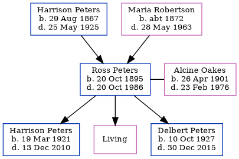

May McTavish (née Peters) 1891 - 1989
[ Home ] | [ Calendar ] | [ Surnames Index ] | [ Census Index ] | [ Family History ]The child of Harrison Peters and Maria Robertson, May Peters, the fourth cousin once-removed on the father's side of Nigel Horne, was born in New Westminster, British Columbia, Canada on May 12, 18911,2,3. She was married to Mctavish. In 1906, she was living in Humboldt, Saskatchewan, Canada1.
She died on Feb 12, 1989 in Michigan, USA3.
Parents
- Harrison Fletcher was born on Aug 29, 1867
- Maria Ellen was born c. 1872
Citations
- 1906 Canada Census of Manitoba, Saskatchewan, and Alberta Ancestry.com Operations Inc (Relation to Head of House: DaughterMarital Status: Single)
- British Columbia, Canada, Birth Index, 1872-1903 Ancestry.com Operations Inc
- Social Security Death Index - Findmypast
Media
Social Security Death Index - USBMD/SSDI/366500891
British Columbia, Canada, Birth Index, 1854–1903 Transcription - US-MCV-101185-12674230012606827152
Family Tree
Generated by ged2site. Last updated on Jun 11, 2024